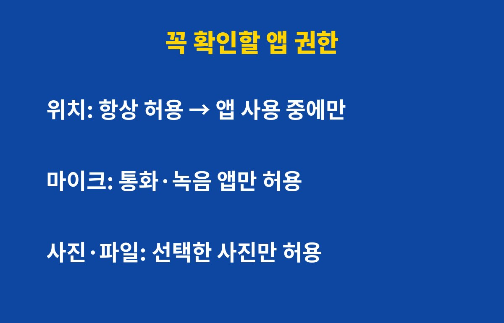

앱 권한은 스마트폰에서 위치·마이크·사진 3가지만 점검해도 개인정보 노출 위험을 크게 줄일 수 있어요. 스마트폰을 쓴다면 누구나 해당되는데, 그런데 다 끄면 오히려 앱이 안 돼서 불편해질 수 있어요. 이유는 아래에 있어요.
앱을 처음 깔 때 "허용"을 눌러둔 권한이 그대로 남아 있는 경우가 많아요. 날씨 앱이 연락처를 보고, 계산기 앱이 위치를 아는 상황이 흔하죠.
모든 권한을 한 번에 점검하기는 어려우니, 피해가 가장 큰 위치·마이크·사진/파일 3가지부터 보면 충분해요.

항상 허용이면 앱을 안 쓰는 중에도 내 이동 경로가 쌓일 수 있어요. 지도·배달·택시 앱이 아니라면 앱 사용 중에만 허용으로 바꾸는 게 안전해요.
집과 직장 위치가 이어지면 생활 패턴이 그대로 드러나기 때문에, 이 설정 하나만으로도 체감이 커요.
마이크는 통화, 녹음, 영상 촬영처럼 꼭 필요한 앱에만 허용하세요. 사진·파일 권한은 전체 허용 대신 선택한 사진만 허용이 가능한 기종이 많아요.
쇼핑·게임 앱이 전체 사진 접근을 요구한다면 한 번 의심해 볼 만해요.
대부분 설정 → 개인정보(보안) → 권한 관리에서 권한별로 어떤 앱이 쓰는지 한눈에 볼 수 있어요. 기종마다 메뉴 이름은 조금 달라요.
| 권한 | 추천 설정 | 예외 |
|---|---|---|
| 위치 | 앱 사용 중에만 | 지도·내비 앱 |
| 마이크 | 필요한 앱만 허용 | 통화·녹음·영상 앱 |
| 사진·파일 | 선택한 사진만 | 갤러리·클라우드 앱 |
권한을 껐는데 앱이 꼭 필요한 기능에서 막히면, 그때 해당 권한만 다시 켜면 돼요. 오래 안 쓰는 앱은 아예 삭제하는 게 가장 확실해요.
도움이 됐다면 구독해 두세요. 생활 속 IT 보안 팁을 계속 알려드릴게요.
기사·공식 발표 기준이며 출시·가격 정보는 바뀔 수 있어요.